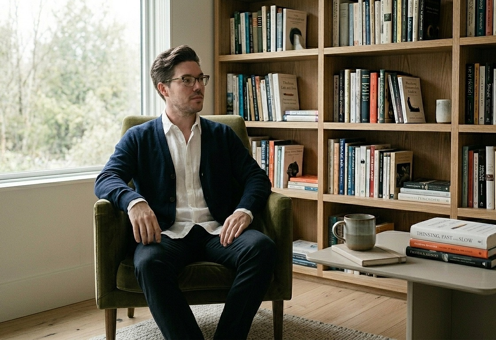

Work with Mitch
1:1 Sessions
The ideal choice if you want a personalized plan that is tailored to your goals and lifestyle.
Learn moreOnline Trainings
Explore opportunities to become certified in Evidence Based EFT or to join Focusing-Somatics Workshops.
Learn moreMy approach
Most people who come to me already understand a lot about themselves.
They can name the pattern. They can tell the story. They may even know exactly where it came from. But insight has not yet become change.
That is often the case with trauma, chronic stress, grief, anxiety, or experiences that were too much, too fast, or too long carried alone. Something in the system is still holding it.
My work helps you come into a different relationship with what you are carrying, so something real can begin to shift.
How I work
At the centre of my work is Focusing, a body-based approach developed by Eugene Gendlin through research with Carl Rogers into what actually helps therapy lead to change.
Part of what they found is that change does not come from insight alone. It comes when a person can pause, sense into their own lived experience, and stay with something there before it is fully formed or explained.
That is the ground of my work.
I begin with what is actually here: what your body is holding, what your nervous system is doing, what feels tight, flooded, shut down, conflicted, or hard to reach.
From there, I help you come into contact with what is carrying the distress, so it can be met properly rather than managed or worked around.
I also draw on Evidence-Based EFT, IFS parts work, and somatic approaches, but these sit inside a larger process. The work is not about applying a method to you. It is about helping something in you come into the kind of contact that allows movement.
Who this is for
This work tends to suit people who are thoughtful, self-aware, and looking for something more than generic advice or surface-level coping.
It may be helpful if you are dealing with trauma, chronic overwhelm, shutdown, anxiety, grief, or patterns that still feel held in the body.
It is also often a good fit for people who have had therapy before and know that, while it helped, something deeper has not shifted.
Some people come because they are carrying spiritual, religious, or existential material and want that taken seriously, without being reduced or dramatised.
My training
My work is grounded in over 15 years of experience across trauma, community practice, and practitioner training.
I have worked with people in a wide range of settings, including homeless young people, survivors of torture and trauma from refugee backgrounds, Indigenous communities, and professionals working in high-risk environments. That breadth has shaped how I work. It has required what I offer to be practical, grounded, and able to hold up under real pressure, not just theory.
At the centre of my practice is Focusing, developed by Eugene Gendlin through research with Carl Rogers into what actually helps therapy lead to change. I am an accredited Inner Relationship Focusing Teacher and continue to train and mentor practitioners in this approach.
Alongside this, I am an accredited Evidence-Based EFT practitioner and trainer, currently working with practitioners across the UK and Europe. I have also completed IFS Level 1 and continue my training in Somatic Experiencing, integrating these approaches into a coherent, process-oriented way of working.
I have a Bachelor Community and Social Studies, majoring in Counselling, and Adv Diploma in Counselling. I am not a psychologist and I do not diagnose mental health conditions. I work within a clear scope of practice as an experienced therapeutic practitioner, with ongoing supervision, training, and professional development.
My work is particularly suited to people carrying trauma, overwhelm, and patterns that have not shifted through insight alone, as well as practitioners seeking to develop greater depth, precision, and clinical integrity in their work.

Upcoming Trainings
I train practitioners in Evidence-Based EFT and Focusing, with an emphasis on learning how to work with the deeper process in a person, not just the method